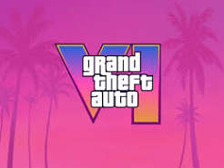
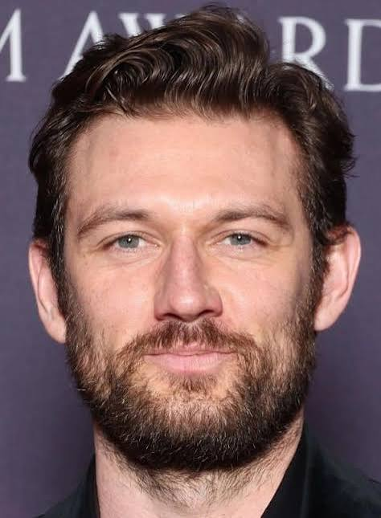
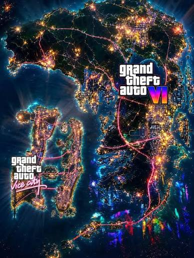

Découvrez l'histoire, les personnages, les missions et le gameplay
Découvrir GTA VI
Grand Theft Auto VI est un jeu vidéo d'action-aventure en monde ouvert développé par Rockstar Games. L'histoire se déroule dans l'État fictif de Leonida, inspiré de la Floride, aux États-Unis. Sa ville la plus célèbre est Vice City, connue pour ses plages, sa vie nocturne, ses bâtiments luxueux et ses quartiers dangereux.
Le jeu suit deux personnages principaux : Lucia Caminos et Jason Duval. Leurs vies sont liées par une relation complexe, leurs ambitions personnelles et une affaire criminelle qui va changer leur avenir.

Informations sur le jeu
Développeur : Rockstar Games
Type de jeu : Action-aventure en monde ouvert
Lieu principal : Leonida
Ville célèbre : Vice City
Personnages principaux : Lucia et Jason
Plateformes : PlayStation 5 et Xbox Series X|S
L'histoire de GTA VI
L'histoire de GTA VI se déroule à Leonida, où Jason et Lucia essaient de trouver une vie meilleure. Les deux personnages ont un passé difficile et savent que la vie n'est pas toujours facile. Ils décident de compter l'un sur l'autre, mais leurs décisions les entraînent dans des situations dangereuses.
Lucia vient de sortir de prison. Elle veut changer de vie et réaliser le rêve de sa mère : offrir un avenir meilleur à sa famille. Jason, quant à lui, a également un passé compliqué. Il a servi dans l'armée avant de se retrouver impliqué avec des trafiquants de drogue locaux.
Lorsqu'une mission qui semble simple tourne mal, les deux personnages se retrouvent impliqués dans une vaste affaire criminelle à travers Leonida. Ils doivent apprendre à se faire confiance et affronter les conséquences de leurs choix.
Les grandes étapes de l'histoire
Un nouveau départ pour Lucia : Lucia sort de prison et essaie de commencer une nouvelle vie.
Le passé de Jason : Jason tente d'avancer malgré son histoire et ses relations avec des personnes dangereuses.
Leur relation : Lucia et Jason deviennent des éléments importants dans la vie l'un de l'autre.
Une mission qui tourne mal : Une opération ne se déroule pas comme prévu et change leur situation.
Une affaire criminelle : Ils se retrouvent impliqués dans une situation beaucoup plus importante qui touche plusieurs régions de Leonida.
Leur avenir : Ils doivent faire face aux conséquences de leurs décisions et apprendre à compter l'un sur l'autre.
Ces éléments présentent l'histoire générale annoncée par Rockstar sans révéler une fin ou des missions qui ne sont pas officiellement détaillées.
Les personnages principaux
1. Lucia Caminos
Lucia Caminos est l'une des deux héroïnes principales de GTA VI. Elle a grandi dans un environnement difficile et son père lui a appris à se battre dès son plus jeune âge. Son passé est compliqué et sa famille occupe une place importante dans sa vie.
Après avoir passé du temps dans la prison de Leonida, Lucia retrouve sa liberté et décide de changer son avenir. Elle souhaite offrir une meilleure vie à sa famille. Elle est déterminée, ambitieuse et veut prendre le contrôle de ses propres décisions.
Sa relation avec Jason devient une partie importante de l'histoire. Elle voit leur association comme une possibilité de réaliser ses ambitions et de construire un avenir différent.
Sa personnalité
Déterminée et ambitieuse.
Forte et indépendante.
Très attachée à sa famille.
Elle souhaite avoir un meilleur avenir.
Elle n'abandonne pas facilement.
2. Jason Duval

Jason Duval est le deuxième personnage principal. Il a grandi dans un environnement où les activités criminelles étaient présentes. Pendant sa jeunesse, il a rencontré plusieurs difficultés et a ensuite rejoint l'armée pour essayer de changer sa vie.
Après avoir quitté l'armée, Jason s'installe dans les Keys de Leonida. Il commence à travailler avec des trafiquants de drogue locaux et se retrouve lié à Brian Heder.
Jason souhaite mener une vie tranquille, mais sa situation devient plus compliquée lorsqu'il rencontre Lucia. Leur relation modifie ses projets et l'entraîne dans une aventure dangereuse.
Sa personnalité
Il souhaite mener une vie simple.
Il possède un passé compliqué.
Il a une expérience militaire.
Il est très lié à Lucia.
Il doit gérer des situations difficiles.
Les personnages secondaires
3. Cal Hampton
Cal Hampton est un ami de Jason et un associé de Brian Heder. Il préfère rester chez lui et passer du temps sur Internet. Il s'intéresse aux informations, aux communications et aux théories inhabituelles.
Il possède une personnalité méfiante et pense souvent que des choses étranges se passent autour de lui. Son caractère apporte une touche d'humour à l'histoire.
4. Brian Heder
Brian Heder est un contrebandier expérimenté qui participe à des activités illégales depuis de nombreuses années. Il possède un chantier naval dans les Keys et entretient des relations avec plusieurs personnes du milieu criminel.
Il permet à Jason de vivre dans l'un de ses logements, mais Jason doit l'aider dans certaines activités. Brian représente une ancienne génération de criminels de Leonida.
5. Boobie Ike
Boobie Ike est un homme d'affaires connu à Vice City. Il a construit un véritable empire dans plusieurs domaines, notamment l'immobilier, le divertissement et la musique.
Il travaille également avec Dre'Quan Priest. Même s'il peut sembler sympathique, il prend ses affaires très au sérieux.
6. Dre'Quan Priest
Dre'Quan Priest est un jeune homme qui souhaite réussir dans l'industrie musicale. Il a autrefois été impliqué dans des activités de rue, mais son principal objectif a toujours été de faire de la musique.
Il travaille avec Boobie Ike et développe le label musical Only Raw Records. Il souhaite également aider de nouveaux artistes à devenir célèbres.
7. Real Dimez
Real Dimez est un duo musical composé de Bae-Luxe et Roxy. Elles sont amies depuis le lycée et souhaitent devenir célèbres grâce à leur musique et aux réseaux sociaux.
Après avoir connu un premier succès musical, elles rejoignent Only Raw Records pour développer leur carrière.
8. Raul Bautista
Raul Bautista est un braqueur de banques expérimenté. Il est intelligent, confiant et toujours à la recherche de nouvelles occasions.
Il aime prendre des risques et rechercher des personnes capables de participer à ses projets. Sa personnalité peut rendre certaines situations plus compliquées pour son entourage.
Les missions dans GTA VI
Les missions représentent une partie importante de GTA VI. Elles permettent aux joueurs de découvrir l'histoire, de mieux comprendre les personnages et d'explorer les différents endroits de Leonida.
1. Les missions principales
Les missions principales sont directement liées à l'histoire. Elles suivent la vie de Lucia et Jason et montrent l'évolution de leur relation ainsi que les difficultés qu'ils rencontrent.
Découvrir les personnages principaux.
Suivre le développement de l'histoire.
Rencontrer des personnages importants.
Découvrir de nouveaux endroits.
Comprendre les conflits de l'histoire.
2. Les missions secondaires
Les missions secondaires permettent aux joueurs de découvrir davantage le monde et les habitants de Leonida. Elles proposent des activités supplémentaires en dehors de l'histoire principale.
Rencontrer de nouveaux personnages.
Découvrir différentes parties de la carte.
Explorer des histoires locales.
Participer à différentes activités.
3. L'exploration et les activités
Le jeu propose également plusieurs activités qui rendent le monde plus vivant. Les joueurs peuvent prendre leur temps pour explorer les villes et découvrir de nouveaux endroits.
Explorer Vice City et ses quartiers.
Découvrir les plages et les paysages naturels.
Visiter les magasins et les lieux de divertissement.
Découvrir la musique et la vie nocturne.
Explorer les différentes régions de Leonida.
4. L'importance des missions
Les missions ne servent pas uniquement à accomplir des objectifs. Elles permettent aussi de comprendre les personnages, leurs relations, leurs ambitions et les conséquences de leurs décisions.
Découvrir Leonida
Leonida est l'État fictif dans lequel se déroule l'histoire. Il possède plusieurs environnements différents, des grandes villes modernes aux plages et aux zones naturelles.
Vice City
Vice City est la ville la plus célèbre du jeu. Elle s'inspire de Miami et se distingue par ses bâtiments colorés, ses plages, sa vie nocturne et son ambiance urbaine.

Les Keys de Leonida
Les Keys sont un ensemble d'îles avec de beaux paysages, des bateaux et des lieux situés près de la mer. Jason possède plusieurs relations dans cette région.
Port Gellhorn
Port Gellhorn est une autre région de Leonida. Elle apporte une ambiance différente au jeu et permet de découvrir le monde au-delà de Vice City.
Grassrivers
Grassrivers est une région naturelle avec des zones humides et différents paysages. Elle permet de découvrir un autre côté de Leonida.
Le gameplay et les fonctionnalités
GTA VI propose un monde ouvert dans lequel les joueurs peuvent explorer différents environnements et découvrir la vie des personnages principaux.
Les principaux éléments du gameplay
Monde ouvert : Explorer un grand territoire fictif avec différents endroits.
Véhicules : Découvrir plusieurs types de véhicules et se déplacer dans Leonida.
Personnages : Suivre les aventures de Lucia et Jason.
Activités : Découvrir différentes occupations en dehors de l'histoire principale.
Environnement : Explorer les villes, les plages, les routes et les paysages naturels.
Musique : Écouter différents styles musicaux grâce aux stations de radio du jeu.
Pourquoi GTA VI est-il spécial ?
GTA VI rassemble une histoire développée, des personnages intéressants, de l'exploration et un monde ouvert détaillé. Le jeu permet aux joueurs de découvrir une version fictive de la Floride et de suivre deux personnages principaux qui possèdent des parcours différents.